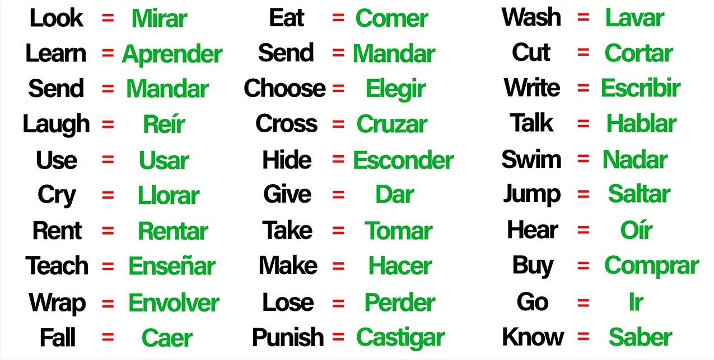

¿Que es el verb to be?
El verbo "to be" en inglés, que se traduce como "ser" o "estar" en español, es un verbo auxiliar fundamental que se utiliza para describir estados, identificar personas o cosas, y formar tiempos verbales como el presente simple y el pasado simple
Tiene tres formas principales: "am" (para la primera persona del singular), "is" (para la tercera persona del singular) y "are" (para la segunda persona del singular y todas las personas del plural).
También se usa para construir la voz pasiva y para expresar origen, posesión y relaciones. Su versatilidad lo convierte en uno de los componentes esenciales del idioma inglés


¿Porque es importante aprender el abecedario en ingles?
El abecedario en inglés es fundamental para leer y comprender el significado de los textos. Los niños que aprenden a usar el abecedario con fluidez y automáticamente pueden enfocar su atención en entender el sentido de lo que leen, que es el propósito principal de la lectura
Conocer el sonido de cada letra te ayuda a pronunciar las palabras correctamente y evitar confusiones. Por ejemplo, la letra C puede sonar como /k/ o como /s/ dependiendo de la vocal que le sigue
Además, el abecedario en inglés te ayuda a aprender el alfabeto fonético internacional (IPA), que es una forma de escribir cómo se pronuncian las palabras en cualquier idioma. Si sabes el IPA, puedes leer una palabra en inglés y saber cómo se dice
Para no extendernos mucho tenemos un pequeño video que demuestra correctamente la pronunciacion de cada letra y un par de ejemplos planteados por nuestros instructores
¿Porque los verbos en ingles son algo fundamental?
Los verbos son la base de las oraciones y juegan un papel fundamental en la comunicación. Conocer algunos verbos te permitirá construir oraciones simples y expresar ideas básicas, lo que es esencial para interactuar en situaciones cotidianas, como viajes, compras o interacciones sociales.
Estos indican acciones y eventos. Saber cómo conjugar y utilizar verbos te permite describir lo que estás haciendo o lo que alguien más está haciendo. Esto es fundamental para contar historias, describir experiencias y compartir información sobre eventos pasados, presentes o futuros. A continuacion, ¡te daremos algunos ejemplos!
Estos son los verbos mas usados pero tambien hay que resaltar al momento de hablar de verbos que ellos también influyen en la estructura de las oraciones. Aprender cómo se conjugan y se usan los verbos te ayudará a formar oraciones correctamente, evitando errores gramaticales y mejorando la claridad de tu expresión.

¿Quieres puntuar nuestro contenido?
¡Te invitamos a que puntues el valor de nuestro contenido!, es muy importante para nosotros saber como te sientes al respecto de nuestro contenido, tu opinion nos ayudaria mucho en el mejoramiento de nuevos contenidos o correcion de estos mismos para ofrecer dia tras dia un mejor servicio y mas unico
Quiero puntuar la pagina